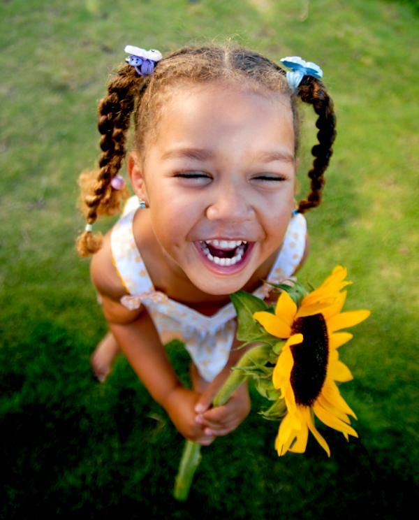
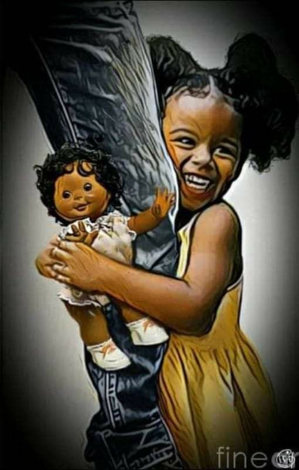

My childhood was filled with adventures and memories that i will always cherish I remember the time we went on vacations to different places, my parents would take us there and we would explore those places with curious minds taking tokens that i stiil have till date. I have had the privilege to have a supportive family that has walked with me through life. My parents were my rock, they supported me in every step of my journey. They encouraged me to explore the world beyond our home. They taught me to be independent, self reliant and instilled into me moral values that have held me. 
